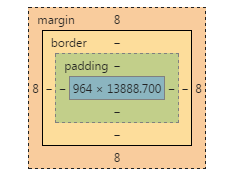

html
- 题目：Doctype作用？严格模式与混杂模式如何区分？它们有何意义?
- 答：doctype可告知浏览器文档使用哪种 HTML 或 XHTML 规范,通过声明中的DTD区分。
能够实现怪异模式（即兼容模式）服务于旧式规则，严格模式服务于标准规则
- 题目：行内元素有哪些？块级元素有哪些？ 空元素有那些？
- 答：行内元素：a、b、span、img、input、strong、select、label、em、button、textarea
块级元素：div、ul、li、dl、dt、dd、p、h1-h6、blockquote
空元素：即系没有内容的HTML元素，例如：br、meta、hr、link、input、img
- 题目：页面导入样式时，使用link和@import有什么区别？
- 答：使用链接link和导入import的好处就是易于维护，但当网速比较慢的时候，会出现加载中断的情况，导致页面排版错误。
他俩的作用相同，唯一的不同是服务对象不一样，@import 为CSS服务，link是为当前的页服务 。
link属于XHTML标签，而@import完全是CSS提供的一种方式。
link标签除了可以加载CSS外，还可以做很多其它的事情，比如定义RSS，定义rel连接属性等，@import就只能加载CSS了。
当一个页面被加载的时候（就是被浏览者浏览的时候），link引用的CSS会同时被加载，而@import引用的CSS会等到页面全部被下载完再被加载。所以有时候浏览@import加载CSS的页面时开始会没有样式（就是闪烁），网速慢的时候还挺明显。
由于@import是CSS2.1提出的所以老的浏览器不支持，@import只有在IE5以上的才能识别，而link标签无此问题。
当使用JavaScript控制DOM去改变样式的时候，只能使用link标签，因为@import不是DOM可以控制的
。@import可以在CSS中再次引入其他样式表
- 题目：请描述一下 cookies，sessionStorage 和 localStorage 的区别？
- 答：软件编程希望通过一些手段来持久化的存储一些有用的数据。对于网络化编程，一般将这项任务交给了服务器端的数据库或者浏览器端的cookie。
随着HTML5的出现，web开发又有了两种选择：Web Storage和Web SQL Database.
Web Storage有两种形式：LocalStorage（本地存储）和sessionStorage（会话存储）。这两种方式都允许开发者使用js设置的键值对进行操作，在在重新加载不同的页面的时候读出它们。这一点与cookie类似。
1.与cookie不同的是：Web Storage数据完全存储在客户端，不需要通过浏览器的请求将数据传给服务器，因此x相比cookie来说能够存储更多的数据，大概5M左右。
2.LocalStorage和sessionStorage功能上是一样的，但是存储持久时间不一样。
LocalStorage：浏览器关闭了数据仍然可以保存下来，并可用于所有同源（相同的域名、协议和端口）窗口（或标签页）
sessionStorage：数据存储在窗口对象中，窗口关闭后对应的窗口对象消失，存储的数据也会丢失。
注意：sessionStorage 都可以用localStorage 来代替，但需要记住的是，在窗口或者标签页关闭时，使用sessionStorage 存储的数据会丢失。
3、使用 local storage和session storage主要通过在js中操作这两个对象来实现，分别为window.localStorage和window.sessionStorage. 这两个对象均是Storage类的两个实例，自然也具有Storage类的属性和方法。
- 题目：如何在页面上实现一个圆形的可点击区域？
- 答：行内元素设置display为拥有块级的属性，给定width、height，border-radius设置为50%，给定背景或者边框即可
- 题目：Label的作用是什么？是怎么用的？
- 答：label一般配合表单元素使用，不包裹使用for="id"，包裹就将元素写在其内，形成点击标签就 使表单聚焦或者选中等
- 题目：网页验证码是干嘛的，是为了解决什么安全问题？
- 答：验证码是为了阻止网页请求缓慢时用户多次提交表单信息
- 题目：title与h1的区别、b与strong的区别、i与em的区别？
- 答：从搜索引擎角度来说，title标签是用来描述这个页面的主题的，是一个网页权重的最高点。但title标签并不出现在文章的正文中。而h1标签一般出现在文章的正文中，是展示给访问者的文章的标题。所以说这两个标签不仅不冲突的，而是合作的关系。
一篇文章既要有title又要有h1标签，既突出了文章的主题，又突出了标题和关键字，达到双重优化网站的效果。
b和strong标签，在网页中默认的情况下均是加粗字体的作用；
标签是一个实体标签，它所包含的字符将被设为blod粗体，是html语言中的；---视觉化
标签是一个逻辑标签，作用是为了加强语气而加粗字体，是xhtml中的，其强调作用，可以用css标 签控制strong强调的方式。----语义化标签
标签告诉浏览器把其中的文本表示为强调的内容。 标签可以用来把这些名称和其他斜体字区别 开来。
如果你只想使用斜体字来显示文本的话，请使用 i 标签。除此之外，文档中还可以包括用来改变文本显 示的级联样式定义。
除强调之外，当引入新的术语或在引用特定类型的术语或概念时作为固定样式的时候，也可以考虑使用 em标签。
css
- 题目：介绍一下标准的CSS的盒子模型？与低版本IE的盒子模型有什么不同的？
- 答： 如图所示，盒子模型指由内到外，蓝色content，绿色padding，土黄色border，棕黄色margin构成的盒子。
而盒子模型主要的区别在于box-sizing属性是border-box还是content-box，前者即IE模式，使内容依据边框变化，后者是边框依据内容变化。
- 题目：CSS选择符有哪些？哪些属性可以继承？
- 答：类型选择符E { sRules }
属性选择符 包含选择符E1 E2 { sRules }
子对象选择符E1 > E2 { sRules }
ID选择符 #ID { sRules }
类选择符 E.className { sRules }
选择符分组 E1 , E2 , E3 { sRules }
伪类及伪对象选择符 E : Pseudo-Classes { sRules }
可以继承的有： font-size font-family color
不可继承的一般有： border padding margin background-color width height 等
- 题目：CSS优先级算法如何计算？
- 答：多个选择器可能会选择同一个元素，有3个规则，从上到下重要性降低：
！important的用户样式 ！important的作者样式 作者样式 用户样式 浏览器定义的样式 CSS规范为不同类型的选择器定义了特殊性权重，特殊性权重越高，样式会被优先应用。
权重设定如下： html选择器，权重为1； 类选择器，权重为10； id选择器，权重为100；
这里还有一种情况：在html标签中直接使用style属性，这里的style属性的权重为1000； SS样式的层叠原则——谁离我近，谁说了算。
当权重一样时，会采用“层叠原则” 后定义的会被应用 CSS样式的特殊标记——谁有特权，谁说了算，即!important
- 题目：CSS3新增伪类有那些？
- 答：:first-of-type p:first-of-type 选择属于其父元素的首个 元素的每个 元素。
:last-of-type p:last-of-type 选择属于其父元素的最后 元素的每个 元素。
:only-of-type p:only-of-type 选择属于其父元素唯一的 元素的每个 元素。
:only-child p:only-child 选择属于其父元素的唯一子元素的每个 元素。
:nth-child(n) p:nth-child(2) 选择属于其父元素的第二个子元素的每个 元素。
:nth-last-child(n) p:nth-last-child(2) 同上，从最后一个子元素开始计数。 :nth-of-type(n) p:nth-of-type(2) 选择属于其父元素第二个 元素的每个 元素。
:nth-last-of-type(n) p:nth-last-of-type(2) 同上，但是从最后一个子元素开始计数。
:last-child p:last-child 选择属于其父元素最后一个子元素每个 元素。
:root :root 选择文档的根元素。 :empty p:empty 选择没有子元素的每个 元素（包括文本节点）。
:target #news:target 选择当前活动的 #news 元素。
:enabled input:enabled 选择每个启用的 元素。
:disabled input:disabled 选择每个禁用的 元素
:checked input:checked 选择每个被选中的 元素。
:not(selector) :not(p) 选择非 元素的每个元素。
::selection ::selection 选择被用户选取的元素部分。
- 题目：position的值relative和absolute定位原点是？
- 答：relative是根据自身位置变化，absolute是根据离它最近的具有定位属性的父元素的位置而定
- 题目：如何居中div？如何居中一个浮动元素？如何让绝对定位的div居中？
- 答：使用margin左右为auto可实现水平居中。
水平垂直居中可设置line-height等于父元素和父元素text-align实现水平垂直居中。
还可以通过flex的新旧属性实现垂直水平居中。
浮动元素居中可通过父元素和子元素同时左浮动， 然后父元素相对左移动50%，再然后子元素相对右移动50%，或者子元素相对左移动-50%
绝对定位的div通过position:absolute; width:500px; height:300px; top:50%; left:50%; margin:-150px 0 0 -250px; 的原理实现居中
- 题目：用纯CSS创建一个三角形的原理是什么？
- 答：长宽均为零，设置border属性形成三角形，然后对不需要的border颜色进行透明，最后根据定位或者其他方法进行使用
- 题目：为什么要初始化CSS样式。
- 答：CSS初始化是指重设浏览器的样式。不同的浏览器默认的样式可能不尽相同，所以开发时的第一件事可能就是如何把它们统一。如果没对CSS初始化往往会出现浏览器之间的页面差异。每次新开发网站或新网页时候通过初始化CSS样式的属性，为我们将用到的CSS或html标签更加方便准确，使得我们开发网页内容时更加方便简洁，同时减少CSS代码量，节约网页下载时间。
- 题目：请解释一下为什么会出现浮动和什么时候需要清除浮动？清除浮动的方式
- 答：浮动的框可以左右移动，直至它的外边缘遇到包含框或者另一个浮动框的边缘。浮动框不属于文档中的普通流，当一个元素浮动之后，不会影响到 块级框的布局而只会影响内联框（通常是文本）的排列，文档中的普通流就会表现得和浮动框不存在一样，当浮动框高度超出包含框的时候，也就会出现包含框不会 自动伸高来闭合浮动元素（“高度塌陷”现象）。
正是因为浮动的这种特性，导致本属于普通流中的元素浮动之后，包含框内部由于不存在其他普通流元素了，也就表现出高度为0（高度塌陷）。在实际布局中，往往这并不是我们所希望的，所以需要闭合浮动元素，使其包含框表现出正常的高度。
清除浮动：其一，通过在浮动元素的末尾添加一个空元素，设置 clear：both属性，after伪元素其实也是通过 content 在元素的后面生成了内容为一个点的块级元素；
其二，通过设置父元素 overflow 或者display：table 属性来闭合浮动
从各个方面比较，after伪元素闭合浮动无疑是相对比较好的解决方案了
.clearfix:after {content:"."; display:block; height:0; visibility:hidden; clear:both; } .clearfix { *zoom:1; }
- 题目：在网页中的应该使用奇数还是偶数的字体？为什么呢？。
- 答：偶数字号相对更容易和 web 设计的其他部分构成比例关系。奇数其实也是可以的。
- 题目：什么是响应式设计？响应式设计的基本原理是什么？
- 答： 页面的设计与开发应当根据用户行为以及设备环境(系统平台、屏幕尺寸、屏幕定向等)进行相应的响应和调整。
实现多使用百分比，弹性网格和布局、图片、rem、CSS media query的使用
- 题目：::before 和 :after中双冒号和单冒号 有什么区别？解释一下这2个伪元素的作用。
- 答：简而言之：单冒号(:)用于CSS3伪类，双冒号(::)用于CSS3伪元素。
伪元素由双冒号和伪元素名称组成。双冒号是在当前规范中引入的，用于区分伪类和伪元素。但是伪类兼容现存样式，浏览器需要同时支持旧的伪类，比如:first-line、:first-letter、:before、:after等。
before为在当前元素前，after是之后。
- 题目：position:fixed;在android下无效怎么处理？
- 答：使用没提查询加fixed变换static if(navigator.platform == 'iPad' || navigator.platform == 'iPhone' || navigator.platform == 'iPod') { $("#footer").css("position", "static"); };
- 题目：overflow: scroll时不能平滑滚动的问题怎么处理？
- 答：1、阻止所有能导致页面滚动的事件。//scroll不能阻止，只能阻止mousewheel，鼠标拽滚动条就悲剧了；
2、bodyoverflow:hidden//win下右侧滚动条会消失导致页面横移，移动端阻止不了；
3、把滚动部分单独放在一个div里，和弹出部分同级，body和window同高。//所有涉及offset/scrollTop的方法都要修改。fix并且width100%的元素(比如微博顶栏)会压在内容区滚动条上；
4、弹出时算scrollTop，给内容区fix然后top移动到目前位置，同时body给一个overflow-y:scroll强撑出滚动条。
JS
- 题目：介绍JavaScript的基本数据类型
- 答： Undefined 类型 Null 类型 Boolean 类型 Number 类型 String类型 Object 类型
- 题目：Javascript创建对象的几种方式？
- 答：1. 简单对象的创建 使用对象字面量的方式{} 创建一个对象（最简单，好理解，推荐使用）
2.用function(函数)来模拟class (无参构造函数)
2.1 创建一个对象，相当于new一个类的实例
2.2 可以使用有参构造函数来实现，这样定义更方便，扩展性更强（推荐使用）
3.使用工厂方式来创建（Object关键字）
4.使用原型对象的方式 prototype关键字
5.混合模式(原型和构造函数)
6.动态原型的方式(可以看作是混合模式的一种特例)
- 题目：谈谈This对象的理解
- 答：1. 不像C#，this一定是指向当前对象。 js的this指向是不确定的，也就是说是可以动态改变的。call/apply 就是用于改变this指向的函数，这样设计可以让代码更加灵活，复用性更高。
2. this 一般情况下，都是指向函数的拥有者。
3. 在函数自执行里，this 指向的是 window 对象
1.在HTML元素事件属性 或 CSS的expression表达式 中inline方式使用this关键字
2.在事件处理函数中使用this关键字 其中可分为两种方式
(1)DOM方式——此种方式的结果是this指向窗口（window）对象
(2)DHTML方式——此种方式的结果是this指向div元素对象实例
3.在类定义中使用this关键字并在其 内部函数 或 成员函数（主要是prototype产生）中使用
- 题目：eval是做什么的？
- 答：这个函数可以把一个字符串当作一个JavaScript表达式一样去执行它。
- 题目：什么是window对象? 什么是document对象?
- 答：document对象是window和frames对象的一个属性,是显示于窗口或框架内的一个文档。
window对象是一个顶层对象,而不是另一个对象的属性即浏览器的窗口。
- 题目：null，undefined的区别？
- 答：undefined表示变量声明但未初始化时的值， null表示准备用来保存对象，还没有真正保存对象的值。从逻辑角度看，null值表示一个空对象指针。
null==undefined //true
null===undefined//false
- 题目：关于事件，IE与火狐的事件机制有什么区别？ 如何阻止冒泡？
- 答：（1）冒泡型事件：事件按照从最特定的事件目标到最不特定的事件目标(document对象)的顺序触发。
(2)捕获型事件(event capturing)：事件从最不精确的对象(document 对象)开始触发，然后到最精确
事件捕获阶段：事件从最上一级标签开始往下查找，直到捕获到事件目标(target)。
事件冒泡阶段：事件从事件目标(target)开始，往上冒泡直到页面的最上一级标签。
事件的传播是可以阻止的：
• 在W3c中，使用stopPropagation（）方法
• 在IE下设置cancelBubble = true； 在捕获的过程中stopPropagation（）；后，后面的冒泡过程也不会发生了~
3.阻止事件的默认行为，例如click后的跳转~
• 在W3c中，使用preventDefault（）方法；
• 在IE下设置window.event.returnValue = false;
- 题目：什么是闭包（closure），为什么要用它？
- 答：要执行的代码块（由于自由变量被包含在代码块中，这些自由变量以及它们引用的对象没有被释放）和为自由变量提供绑定的计算环境（作用域）。
作用一个是前面提到的可以读取函数内部的变量，另一个就是让这些变量的值始终保持在内存中，还可以防止变量污染等。
- 题目：Javascript中，有一个函数，执行时对象查找时，永远不会去查找原型，这个函数是？
- 答：hasOwnProperty
- 题目：js延迟加载的方式有哪些？
- 答：defer和async、动态创建DOM方式（用得最多）、按需异步载入js
- 题目：Ajax 是什么? 如何创建一个Ajax？
- 答：异步请求，先创建一个XMLHttpRequest，使用创建的xmlHttp实现最简单的ajax get post请求
- 题目：同步和异步的区别?
- 答：同步是指完成一个线程才触发下一个线程，异步指同时触发多个线程，不需要等待
- 题目：如何解决跨域问题?
- 答：jsonp、 iframe、window.name、window.postMessage、服务器上设置代理页面
- 题目：页面编码和被请求的资源编码如果不一致如何处理？
- 答：引入文件时进行charset
- 题目：.call() 和 .apply() 的含义和区别？
- 答：call方法: 语法：call([thisObj[,arg1[, arg2[, [,.argN]]]]])
定义：调用一个对象的一个方法，以另一个对象替换当前对象。
说明： call 方法可以用来代替另一个对象调用一个方法。
call 方法可将一个函数的对象上下文从初始的上下文改变为由 thisObj 指定的新对象。 如果没有提供 thisObj 参数，那么 Global 对象被用作 thisObj。
apply方法： 语法：apply([thisObj[,argArray]])
定义：应用某一对象的一个方法，用另一个对象替换当前对象。
说明： 如果 argArray 不是一个有效的数组或者不是 arguments 对象，那么将导致一个 TypeError。 如果没有提供 argArray 和 thisObj 任何一个参数，那么 Global 对象将被用作 thisObj， 并且无法被传递任何参数。
两个方法基本上是一个意思，区别在于 call 的第二个参数可以是任意类型，而apply的第二个参数必须是数组，也可以是arguments
- 题目：jQuery.fn的init方法返回的this指的是什么对象？为什么要返回this？
- 答：jQuery = window.jQuery = window.$ = function (x, y)
{ return new jQuery.fn.init(x, y); };
jQuery.fn = jQuery.prototype = { init: function() { // some logic for object initialization return this; } };
从这段代码我们可以看出: jQuery()实际上就是jQuery.fn.init()
jQuery.fn和jQuery.prototype一样，实际上就是一个jQuery对象的一个原型的定义
这两段代码的作用实际上就是要让用户使用jQuery()或者$.jQuery()的时候,就完成对jQuery对象的初始化，不需要在动态的去调用init方法
- 题目：jquery中如何将数组转化为json字符串，然后再转化回来？
- 答：parse() : 把字符串转成json（能转字符串是JSON的形式(标准的JSON形式)） 字符串中的属性要严格的加上引号
stringify() : 把json转化成字符串 会自动的把双引号加上
- 题目：一个页面从输入 URL 到页面加载显示完成，这个过程中都发生了什么？
- 答： 查找浏览器缓存
DNS解析、查找该域名对应的IP地址、重定向（301）、发出第二个GET请求
进行HTTP协议会话
客户端发送报头(请求报头)
服务器回馈报头(响应报头)
html文档开始下载
文档树建立，根据标记请求所需指定MIME类型的文件
文件显示
浏览器这边做的工作大致分为以下几步：
加载：根据请求的URL进行域名解析，向服务器发起请求，接收文件（HTML、JS、CSS、图象等）。
解析：对加载到的资源（HTML、JS、CSS等）进行语法解析，建议相应的内部数据结构（比如HTML的DOM树，JS的（对象）属性表，CSS的样式规则等等） }
其他
- 题目：http状态码有那些？分别代表是什么意思？
- 答：100-199 用于指定客户端应相应的某些动作。
200-299 用于表示请求成功。
300-399 用于已经移动的文件并且常被包含在定位头信息中指定新的地址信息。
400-499 用于指出客户端的错误。
400 1、语义有误，当前请求无法被服务器理解。
401 当前请求需要用户验证
403 服务器已经理解请求，但是拒绝执行它。
500-599 用于支持服务器错误。
503 – 服务不可用
- 题目：你有哪些性能优化的方法？
- 答：（1） 减少http请求次数：CSS Sprites, JS、CSS源码压缩、图片大小控制合适；网页Gzip，CDN托管，data缓存 ，图片服务器。
（2） 前端模板 JS+数据，减少由于HTML标签导致的带宽浪费，前端用变量保存AJAX请求结果，每次操作本地变量，不用请求，减少请求次数
（3） 用innerHTML代替DOM操作，减少DOM操作次数，优化javascript性能。
（4） 当需要设置的样式很多时设置className而不是直接操作style。
（5） 少用全局变量、缓存DOM节点查找的结果。减少IO读取操作。
（6） 避免使用CSS Expression（css表达式)又称Dynamic properties(动态属性)。
（7） 图片预加载，将样式表放在顶部，将脚本放在底部 加上时间戳。
（8） 避免在页面的主体布局中使用table，table要等其中的内容完全下载之后才会显示出来，显示比div+css布局慢。
总结